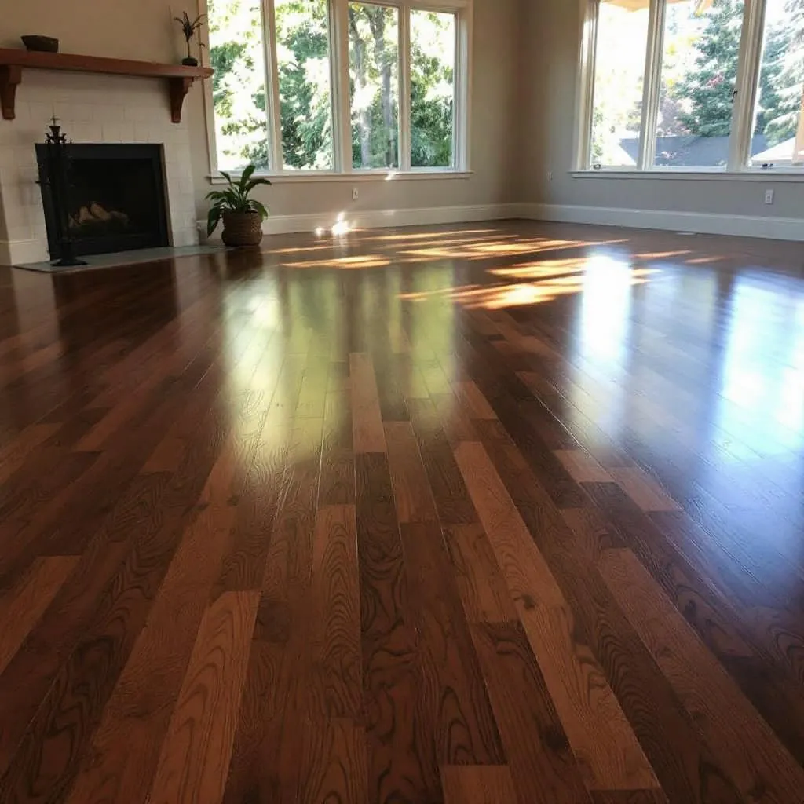

Medical Lake is a small Spokane County community of about 5,000 residents built around the mineral-rich lake that gave it its name. Located just west of Airway Heights near Fairchild Air Force Base, the town blends military families, long-time Washington residents, and a rural character distinct from Spokane's urban core. Medical Lake's modest homes often feature original hardwood floors from mid-century construction that benefit from professional refinishing to restore their character. Selkirk Hardwood serves Medical Lake with the same NWFA-certified expertise we bring to all of the Spokane region.

Our Hardwood Flooring Services in Medical Lake
- Hardwood Installation — New solid and engineered hardwood installation in Medical Lake homes.
- Floor Refinishing — Dustless sanding and refinishing to restore existing hardwood floors.
- Custom Staining — Full palette of stain colors to match your Medical Lake home's interior.
- Floor Repair — Board replacement, gap filling, and spot repair for damaged sections.
- Moisture Testing — Essential in Washington's climate before any installation.

Frequently Asked Questions — Hardwood Floors in Medical Lake
How much does hardwood refinishing cost in Medical Lake?
Hardwood floor refinishing in Medical Lake runs $3 to $8 per square foot depending on floor condition and stain choice. Most standard rooms of 200 to 400 square feet cost $600 to $2,400. We provide free in-home estimates with no obligation.
How long does hardwood refinishing take in Medical Lake?
Most Medical Lake refinishing projects take 3 to 5 days including sanding, staining, and finish coats with proper dry time between coats. You can walk on floors in socks after 24 hours and move furniture after 48.
Does Eastern Washington's dry climate affect hardwood floors in Medical Lake?
Yes. Medical Lake's semi-arid climate means winter humidity can drop below 20%, causing wood to contract and gaps to appear between boards. We recommend a whole-home humidifier to maintain 35 to 55% relative humidity year-round to protect your investment.
Get a Free Estimate in Medical Lake
NWFA-certified · Dustless sanding · Serving Medical Lake and the Spokane metro
📞 (509) 461-9375